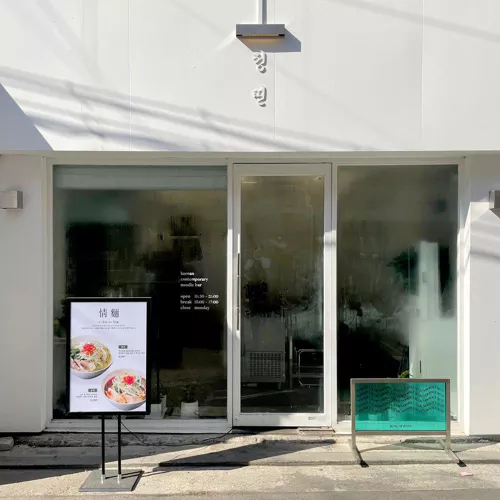
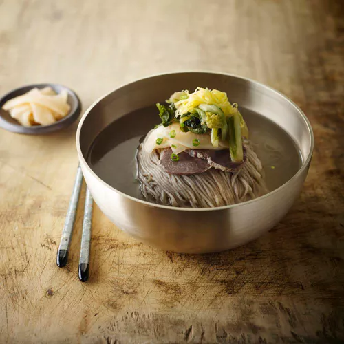

Listings (list view) (grid view)
- Kojacha Asian starCount1 priceGrade4 Kojacha — Korean (“Ko”) chefs' Japanese (“ja”) and Chinese (“cha”) cuisine. The shared culinary ambition of Chefs Choi Yu-gang and Jo Yeong-du, who previously cooked at The Shilla Hotel, has given rise to a distinct culinary genre. ... 17 Hakdong-ro 97-gil, Gangnam-gu
- Eatanic Garden Inobative starCount1 priceGrade4 Eatanic Garden is a wordplay since, amusingly, both “botanic garden” and “eatanic garden” are pronounced the same way in Korean. As the name suggests, the space evokes a beautiful urban garden that awakens the five senses ... 36F Josun Palace Hotel, 231 Teheran-ro, Gangnam-gu
- Restaurant Allen Contemporary starCount1 priceGrade4 Chef Allen Suh has opened a restaurant named after his ame. The chef and his veteran culinary team create dishes, based on seasonal ingredients, that illustrate the beauty of Korea's four seasons. His master in utilizing a wide variety ... 2F Center field EAST E205, 231 Teheran-ro, Gangnam-gu
- Evett Inobative starCount1 priceGrade4 After years of traveling, researching and cooking, Australian native Joseph Lidgerwood settled in Seoul. His fascination with local ingredients serves as the main inspiration behind the inventive offerings. Take, for example, the dish "Freshwater Snails": blended to a purée-like consistency ... 33 Dogok-ro 23-gil, Gangnam-gu
- Bicena Korean starCount1 priceGrade4 Towering above Seoul on the 81st floor of the Signiel Seoul Hotel, Bicena is trying to stay true to the spirit of traditional Korean fine dining. Bicena continues to respect the most fundamental details of slow Korean cuisine such as Jang (fermented sauces) and kimchi ... 81F Lotte World Tower, 300 Olympic-ro, Songpa-gu
-  Jeongmyeon Noodles bibgourmand priceGrade1 A seven-seat stainless steel table and an open kitchen are all there is to Jeongmyeon, which means “noodles infused with meaning.” This one-chef operation serves noodle soups with meat. White noodle soup and red noodle soup are the only two dishes on the menu, but both ... 88 Neungdong-ro 13-gil, Gwangjin-gu
-  Bongpiyang Naengmyeon bibgourmand priceGrade1 Famed for its authentic Pyeongyang cold buckwheat noodles and grilled spareribs, Bongpiyang is operated by the local Byeokje Galbi barbecue restaurant franchise. These legendary noodles, with a high buckwheat content, are served in a flavorful chilled beef broth ... 1-4 Yangjae-daero 71-gil, Songpa-gu
-
 FAGP
Italian
bibgourmand
priceGrade2
In a city where a plate of pasta is as ubiquitous as a bowl of kalguksu, it
takes a good dose of creativity and knowledge of the genre to be
recognized for one's craft. Chef Lee Jong-hyuk is armed with both. FAGP
is a casual restaurant that offers a simple yet inventive menu ...
136 Wangsimni-ro, Seongdong-gu
FAGP
Italian
bibgourmand
priceGrade2
In a city where a plate of pasta is as ubiquitous as a bowl of kalguksu, it
takes a good dose of creativity and knowledge of the genre to be
recognized for one's craft. Chef Lee Jong-hyuk is armed with both. FAGP
is a casual restaurant that offers a simple yet inventive menu ...
136 Wangsimni-ro, Seongdong-gu
- Mandujip Mandu bibgourmand priceGrade1 Located in a trendsetting part of the city dominated by state-of-the-art fashion, this restaurant has stood its ground for 30 years with a humble dish that has wooed the palates of countless people — dumpling soup. Mandujip specializes in Pyeongando-style dumplings ... 338 Apgujeong-ro, Gangnam-gu
- Tim Ho Wan Dim Sum bibgourmand priceGrade1 Tim Ho Wan has played a major role in making Hong Kong-style dim sum popular in many countries worldwide. The main force behind such growing popularity has been its policy of maintaining the traditional form of Hong Kong dim sum dishes and making them available ... 30 Bongeunsa-ro 86-gil, Gangnam-gu
Categories
- A
- B
- C
- D
- E
- F
- G
- I
- J
- K
- M
- N
- R
- S
- T
- U
- V
- Y